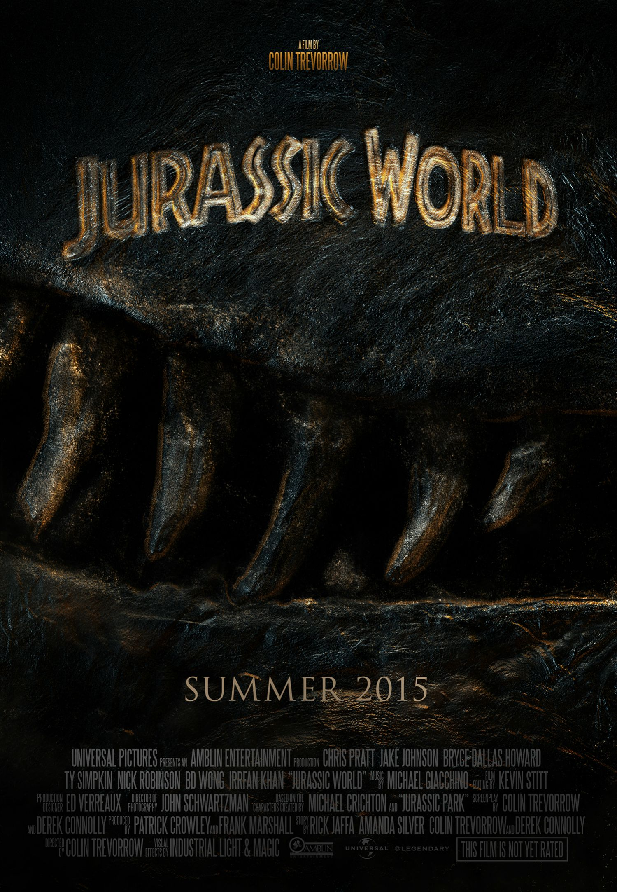

Twenty-two years after the events of Jurassic Park, a new theme park, Jurassic World, now operates on Isla Nublar, off the Pacific coast of Central America. The new park is run by the Masrani Global Corporation, which also owns InGen, the genetics company that creates the dinosaurs.Brothers Zach and Gray Mitchell visit Jurassic World to see their aunt Claire, the park's operations manager. Claire, a busy workaholic, assigns her assistant to be the boys' guide. Owen Grady has been training the park's four Velociraptors. InGen security chief Vic Hoskins believes that raptors are trainable for military use, despite Owen's objections. Park owner Simon Masrani has Owen evaluate the park's new hybrid dinosaur, "Indominus Rex", before the attraction opens. Owen warns Claire that the Indominus, raised in isolation, is potentially dangerous because it is not socialized to other animals. When the Indominus has seemingly escaped its paddock, Owen and two staff enter the enclosure. The Indominus, having camouflaged itself and masked its heat signature, ambushes them, devouring the two staff before escaping into the island's interior. Owen orders the Indominus to be executed, but Masrani sends the Asset Containment Unit to capture the dinosaur. When most of the ACU team are killed, Claire orders the island's northern sector evacuated. Zach and Gray, exploring in a gyrosphere ride, enter a restricted area where the Indominus attacks and destroys their sphere. The boys escape and come upon the ruins of the original Jurassic Park Visitor Center. After repairing an old Jeep, they drive back to the park resort. Claire and Owen, who are searching for the boys, barely escape the Indominus themselves. Masrani and two troopers hunt the Indominus by helicopter, but when the Indominus smashes into the park's aviary to escape gunfire, it releases pterosaurs that collide with the helicopter, causing it to crash. Gray and Zach find Owen and Claire at the resort as armed troopers shoot down the pterosaurs with tranquilizers. Assuming command, Hoskins orders that the raptors be used to track the Indominus; Owen is forced to accept Hoskins' plan and lead the raptors. However, when they reach the Indominus, the dinosaurs begin communicating with one another. Owen realizes that the Indominus was created with raptor DNA; it becomes the raptor pack's new alpha. Hoskins, meanwhile, has Dr. Henry Wu helicoptered off-site with dinosaur embryos, protecting his research. Owen, Claire, and the boys find Hoskins at the lab packing up more embryos, but a raptor breaks in and kills him. Owen reestablishes his alpha bond with the three surviving raptors before the Indominus reappears. Two raptors are killed attacking it. Claire has the park's old veteran Tyrannosaurus rex released from its paddock and lures it into a battle with the Indominus. The T. rex has the upper hand for a moment, then ends up being overpowered, but before the Indominus can kill it, the lone surviving raptor joins in on the attack, saving the T. rex. The raptor and T. rex force the overwhelmed Indominus towards a lagoon, where it is dragged underwater by the park's resident Mosasaurus. Isla Nublar is abandoned, while the survivors are evacuated to the mainland. Zach and Gray are reunited with their parents, while Owen and Claire decide to stay together. On the now abandoned island, the T. rex walks onto the helipad, and roars triumphantly, claiming the island as hers once again.
Jurassic World
